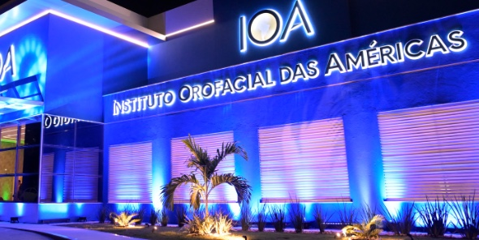

Localização premium
Jardim Renascença, São Luís – MA.

O IOA | ITC São Luís é a unidade da Rede IOA no Maranhão, reunindo educação continuada, treinamento prático e infraestrutura para o desenvolvimento profissional.
A Rede IOA — Instituto Orofacial das Américas — é uma rede de educação continuada com unidades distribuídas pelas cinco regiões do país, oferecendo cursos de especialização, imersão, aperfeiçoamento e habilitação.


Em São Luís, a unidade integra o Instituto Orofacial das Américas (IOA) e o Instituto de Treinamento em Cadáveres (ITC), combinando clínica para atividades práticas supervisionadas e laboratório para treinamento em anatomia.
“Proporcionamos a estrutura ideal para que nossos alunos possam atingir os resultados esperados de maneira eficaz.” — Rede IOA
Educação continuada e prática clínica supervisionada.
Treinamento prático em laboratório de anatomia.
Formação que une fundamentação teórica, prática supervisionada e atualização constante, com foco nos resultados profissionais do aluno.
Instalações projetadas para um aprendizado ideal, com laboratórios e salas preparados para atividades teóricas e práticas.
Cursos, serviços e espaços pensados para aproximar profissionais, empresas e instituições das demandas reais do mercado.
Jardim Renascença, São Luís – MA.
Professores com experiência acadêmica e profissional (perfis oficiais a publicar).
Ambiente especializado para treinamentos práticos.
Estrutura clínica ampla para atividades supervisionadas.